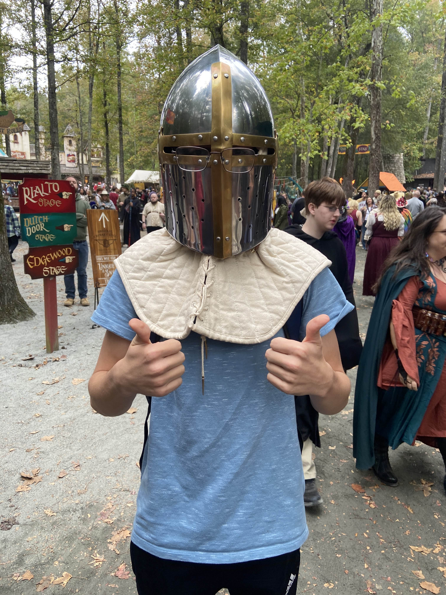

Introduction
Hello! My name is Luke Rossi, I am 18 years old and I go to Lake Norman Charter High School. I have been programming for most of my life and I absolutely love it. I am super into competitive robotics, 3d modeling, and programming. My favorite languages are typescript and java.

About Me
- Personal Background: I was born here in Charlotte where I have lived all my life
- Professional Background: I have been programming for about 7 years now but I have been completely self taught.
- Academic Background: I am currently a Senior at Lake Norman Charter HS, and am dual-enrolled into CPCC-merancus.
- Primary Computer: My PC that I use is a custom built that runs Windows 11, but my Acer laptop that I do the majority of programming on runs on debian linux.
- Courses im taking:
- IT Javascript - Full set: I have always liked javascript and I think that this set of courses will help further my understand a ton by gaining proper education on it, I would like to be able to make websites and projects using typescript and reactJS by the end of the year.
- Simulation and Game Development- Full set: I am taking this course because I have a massive interest in making games and 3d modeling, both of which are covered in the 4 courses inside of this. I have already made some in the past but this will help further my understanding.